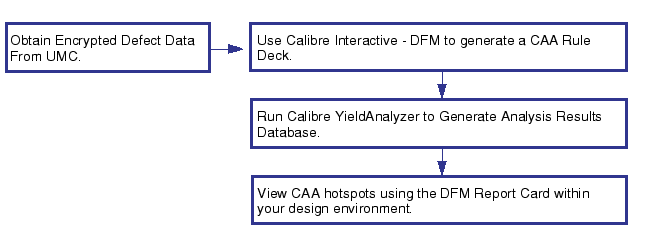

Running Critical Area Analysis With a UMC Rule File
The Calibre YieldAnalyzer Critical Area Analysis (CAA) functionality is fully certified in the UMC flow.
Users must generate the CAA rule deck through the YieldAnalyzer Critical Area Analysis user interface in Calibre Interactive DFM.
The defect density data required for generating the CAA rule deck is provided by UMC as an encrypted file. The resulting rule deck is also encrypted.
Figure 1. Calibre CAA with UMC Defect Data
Prerequisites
The Calibre software tree is installed.
The CALIBRE_HOME or MGC_HOME environment variable is set to point to the Calibre version software tree.
You have obtained the UMC DDK.
Procedure
- Create a CAA runset.
Try It!

Calibre Critical Area Analysis Tutorial and Example Kit
Includes instructions on creating a runset along with documentation and data for performing Critical Area Analysis (CAA) with Calibre YieldAnalyzer. The procedures step you through running CAA on a chip, CAA with marker layers, CAA on a cell library, and CAA with No Defect Density (NDD).
Go to this page on Support Center to download the eKit (Documentation tab, Document Types=Getting Started Guide). The link goes to the latest release.